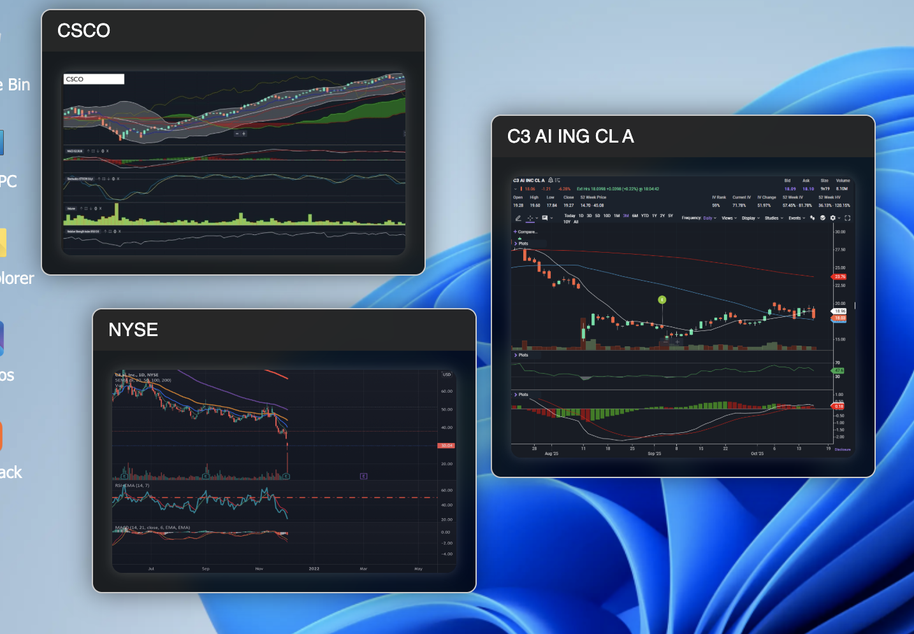
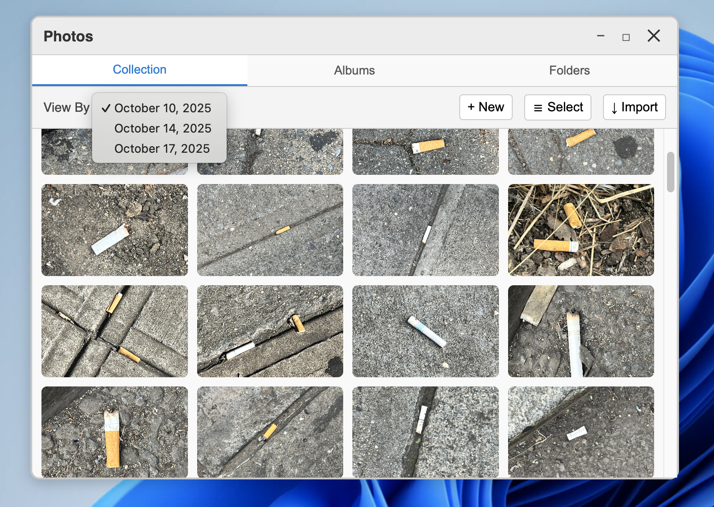
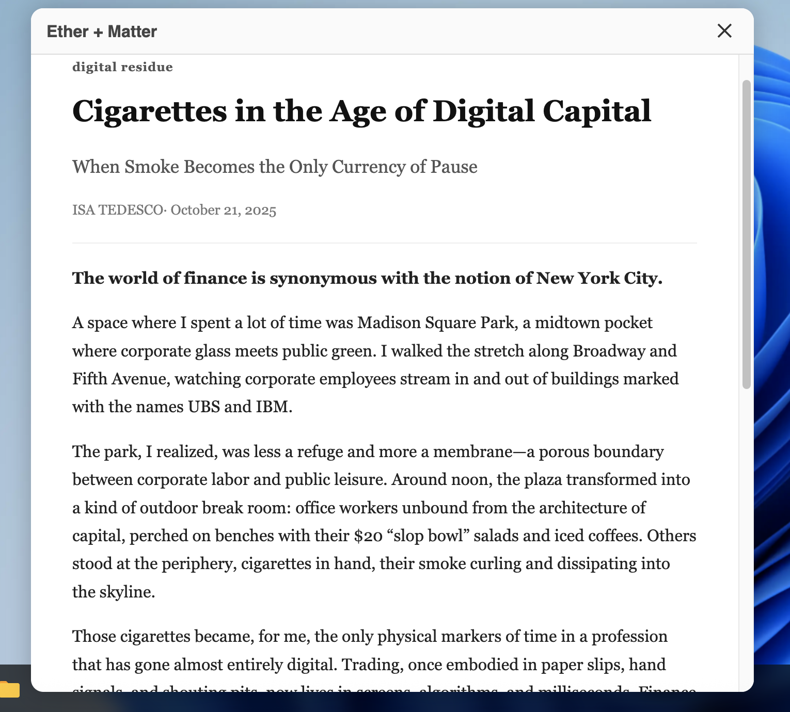

Web Design — Critical Interface & Urban Research
Finance & Cigarette
Culture
A simulated hedge fund analyst's desktop — transforming a familiar Windows 11–like interface into a reflective space on the rituals, abstractions, and human residue of financial life in New York City.

The project began with a walk. Starting at Madison Square Park and moving north along Broadway and 5th Avenue toward Bryant Park, I observed a ritual playing out in the margins of corporate space: finance workers stepping out of glass towers to smoke, eat, and momentarily exist outside the architecture of capital.
Those cigarette butts — scattered near the facades of UBS and JP Morgan, ground into the pavement outside office lobbies — became the entry point. A residue of the financial body dispersed through urban space. Small artifacts of stress and indulgence, tracing an ecology that connects individuals, economies, and waste in ways the Bloomberg terminal never would.
"The cigarette persists as a physical residue — a small act of resistance and reflection within the circuitry of finance."
The Interface
The project takes the form of a simulated Windows 11 desktop — the analyst's workspace, recreated as a reflective environment. Familiar icons open into different dimensions of financial life. This PC reveals the stock market graphs that structure an analyst's daily reality, visualizing capital's abstraction. Photos holds the images I took around Midtown: cigarette butts outside finance buildings, quiet remnants of habit and relief. Substack contains my written reflections on the ecology of finance and leisure across New York City.
The Substack window is deliberately designed to mirror the act of stepping outside for a smoke — a small break from digital chaos, a moment of embodied pause within an increasingly immaterial economy. The written reflection and the cigarette occupy the same structural role: both are interruptions, both are rituals, both leave a trace.
Finance & The Cigarette
In the mid-20th century, smoking was deeply embedded in professional and traditionally masculine work culture. Tobacco companies like Lucky Strike and Camel explicitly marketed cigarettes to white-collar men as symbols of composure and control — the boardroom and the trading floor thrived on an ethos of "cool under pressure," and the cigarette was a prop for that identity.
Both industries transform organic material — tobacco, labor, capital — into abstract value. Finance is now primarily digital, its trades invisible and instantaneous. The cigarette, by contrast, is irreducibly physical: a temporal act, a thing that burns down. It remains as embodiment within an immaterial economy — and as evidence that even inside the most abstract systems, there are still bodies, still stress, still the need for a moment outside.


